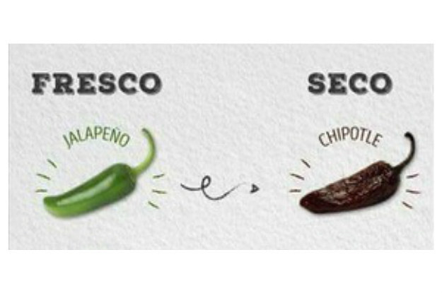

El chile, junto al maíz, el frijol y la calabaza, forma parte de la
dieta del pueblo mexicano desde hace más de 5000 años. En la etapa
prehispánica el chile se utilizaba como alimento y medicina. Existió
desde tiempos remotos toda una cultura en torno a este ingrediente.
Entre otros usos, los aztecas también usaron el humo de chile como
arma de guerra a modo de gas bélico, equivalente a un gas lacrimógeno.
Durante la conquista de América, los españoles descubrieron este
fruto, al que llamaron pimiento. Como dijo el religioso español Fray
Bartolomé de las Casas en el siglo XVI: “Sin el chile los mexicanos no
creen que están comiendo”. A partir de este siglo comenzó a cultivarse
en Europa y el resto del mundo.
A continuación, una relación de 10 de los chiles frescos mexicanos más representativos. Entre paréntesis el nombre que recibe cada chile en su versión seca:
Inicio
Jalapeño (Chipotle)

Propio del Estado de Veracruz, es el que más se consume en México. Presenta un color verde brillante y un tamaño entre 7 y 9 cm. El 60% de la producción nacional se destina a la fabricación de encurtidos, un 20% se come fresco y el resto se utiliza para la elaboración de los famosos chipotles. Para ello, el jalapeño se somete a un proceso de secado y ahumado.
RecetasInicio
Poblano (Ancho o mulato)

Este chile no demasiado picante, de color verde oscuro y piel carnosa, es muy apreciado en México. Su nombre proviene del Estado de Puebla y mide en torno a 12 cm de largo. Se utiliza sobre todo para la preparación de los chiles rellenos (de carne, queso, frijoles, etc.). El chile relleno que goza de más fama en todo el país es el tradicional chile en nogada.
RecetasInicio
Serrano (Serrano)
De los más conocidos, muy picante, se utiliza para como ingrediente en la Salsa Mexicana o el Pico de Gallo. Es muy habitual comerlo a bocado redondo. De color verde brillante y con punta, mide alrededor de 7 cm de largo. Se cultiva en la región serrana del Estado de Puebla.
RecetasInicio
Mirasol (Guajillo)
Chile poco picante, que en el centro de México se utiliza fresco para salsas, adobos y guisos, aunque la mayor parte de su producción se da en el Altiplano Norte. Tiene un color verde claro que con su maduración pasa a rojo brillante. Mucho más popular en su modalidad seca.
RecetasInicio
Chilaca (Pasilla)
Tiene unos usos bastante parecidos al poblano, se utiliza para hacer chiles rellenos o tacos, tamales; molido para salsas y otros guisos. De color verde oscuro, destaca por no ser demasiado picante y por su longitud entre 15 y 25 cm.
RecetasInicio
Güero (Chilhuacle)

uno de los ingredientes característicos de la gastronomía de la Península de Yucatán. Se utiliza en una gran variedad de preparaciones, asado, cortado en rodajas, en diferentes guisos de carne, pescado y mariscos… Presenta un picor medio, mide alrededor de 10 cm de largo y es de color amarillo pálido.
RecetasInicio
Habanero (Habanero)
El chile habanero, de sabor picante intenso, es muy común en Yucatán. Es de tamaño pequeño, en torno a 4 cm. Se utiliza como acompañamiento de la cochinita pibil, uno de los guisos más populares de esta región. Chile de color verde que cambia a amarillo y luego a rojo durante su proceso de maduración.
RecetasInicio
Chile de arbol (Arbol)
De color verde brillante que se torna rojo al madurar, forma alargada y unos 7 cm de longitud, se denomina así porque su planta es más alta que la de la mayoría de los chiles. Se parece en sabor al chile serrano, aunque más picante, y se gasta sobre todo en salsas y guisados
RecetasInicio
Chile manzano (Manzano)
Se cultiva en todos los Andes, desde Chile a Colombia y en zonas de montaña de América central y México. Pariente del habanero, de forma cilíndrica, este es uno de los chiles más picantes del país. Se utiliza sobre todo en salsas y en rajas con cremas y papas. En su proceso de maduración su color varía de verde a amarillo o rojo. mide aproximadamente 5 cm de largo y otros tantos de ancho
RecetasInicio
Chile chiltepin (Chiltepin)
También conocido como chile de monte o piquín. De color verde oscuro brillante que se transforma en rojo al madurar y tamaño diminuto, entre 1 y 1,5 cm. Muy picante. Se consume molido para acompañar salsas, caldos, guisos, fruta picada…
RecetasInicio